Jobs, scored against your terms
A score, and a check for each line you won’t cross.
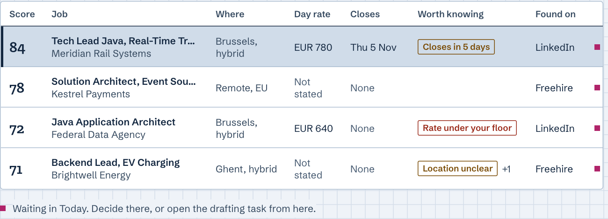
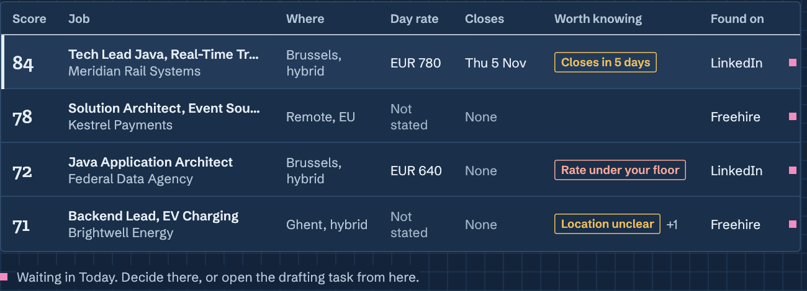
A free desktop app. Claude finds jobs, scores them against your terms and drafts your CV and cover letter. You choose each task before it starts.
On a phone? Open this page on your Mac or PC to download.
Free · Mac with an Apple chip, or 64-bit Windows · Needs Claude Code · What Claude costs
Strong fit, 84 of 100. All six checks pass.
Jobdesk gives screens to ai‑job‑search, free job search tasks for Claude Code. Your job search folder stays on your computer.
A score, and a check for each line you won’t cross.


OK, Unclear or Fails, with the reason.
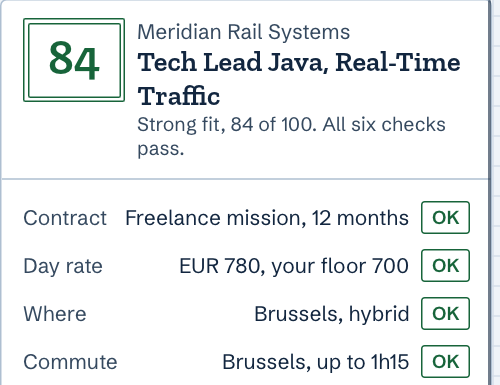
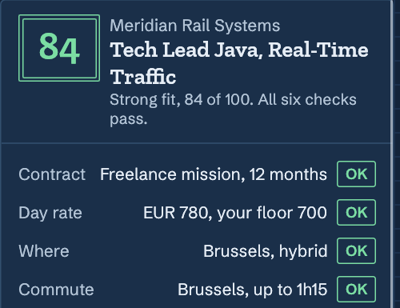
Follow each task step by step. Answer Claude, often in one click.
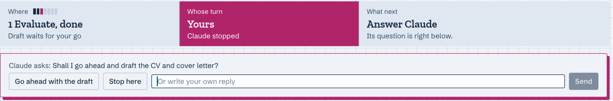
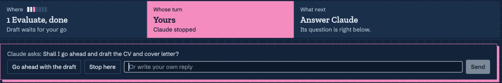
From Not sent yet to Closed.
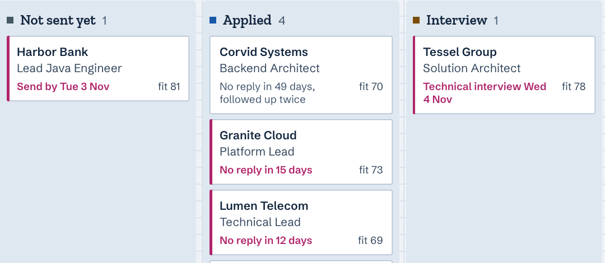
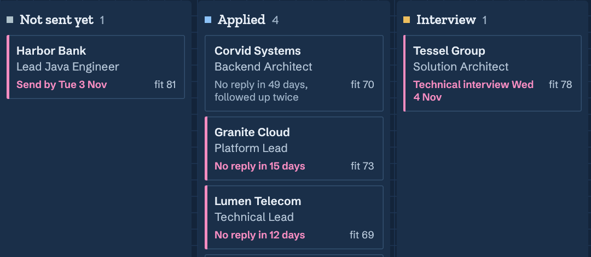
PDFs, checks, interview prep and follow-ups, per application.
What Claude knows about you. Edit it in place.
Claude Code’s estimate of each task’s cost. On a Claude plan, it is not your bill. Set a monthly cap.
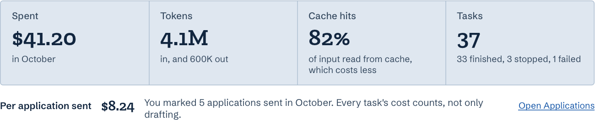
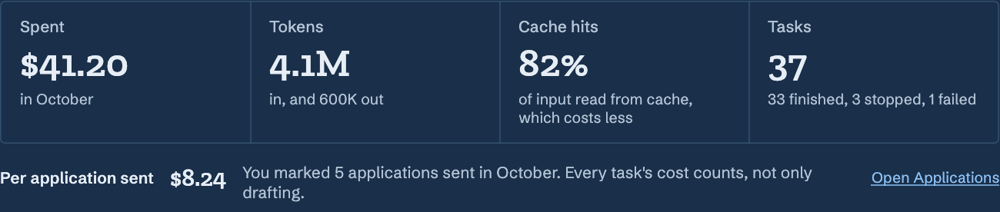
Pick a task, check it, press Run.
It works in your job search folder, one task at a time.
/apply https://kestrel.example/jobs/2Today, Jobs and Applications update as it works.
Jobdesk makes your folder and installs the tools. Claude builds your profile from your CV.
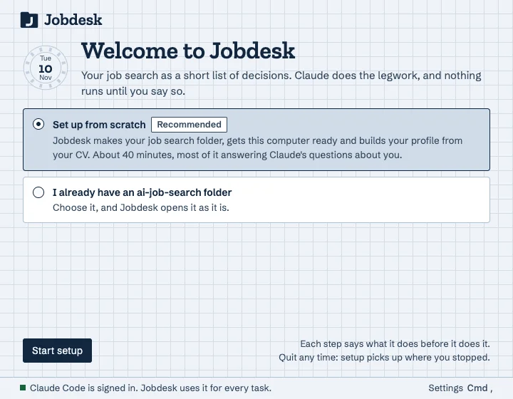
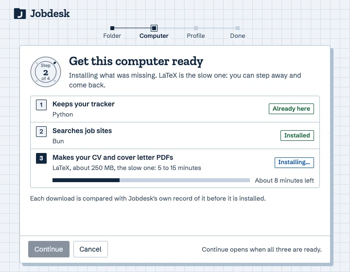
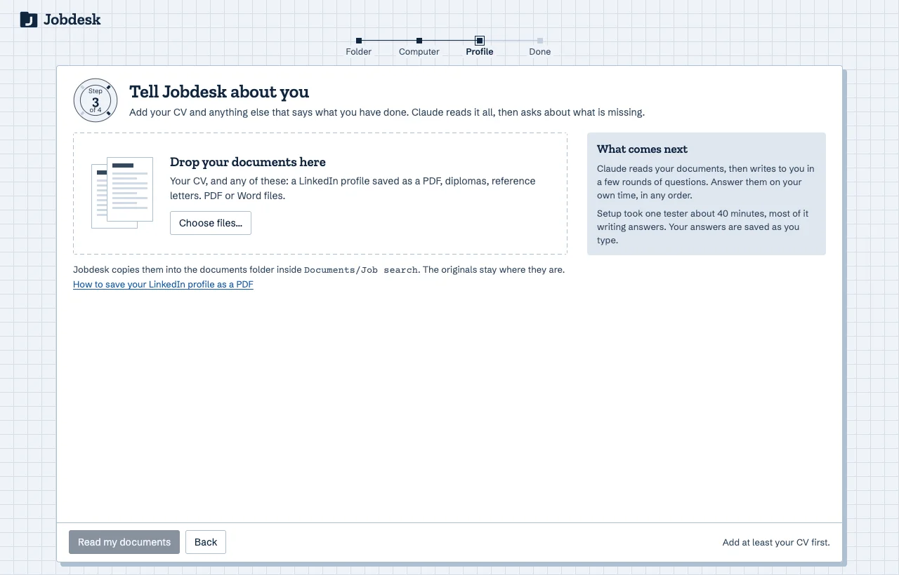
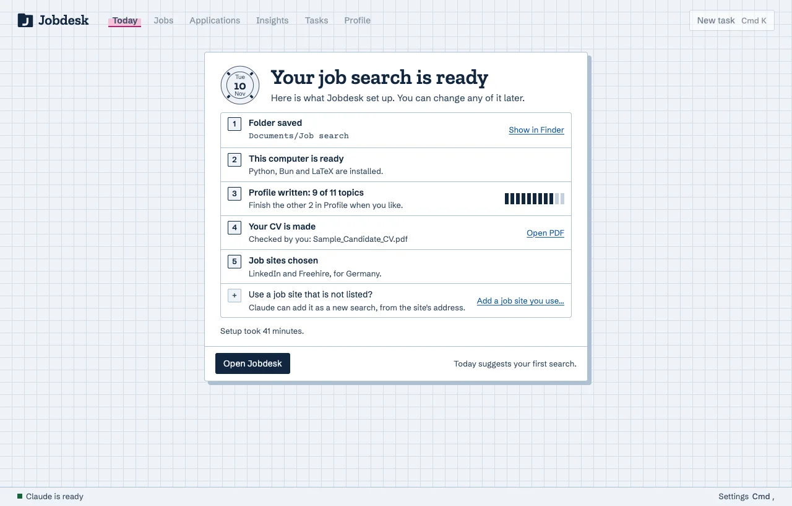
Short answers. The user guide has the rest.
Jobdesk is free. Claude’s work is billed by Anthropic, through Claude Code. Each task has a spending limit, and you can set a monthly cap.
Yes, if it includes Claude Code. The free plan does not. Jobdesk uses Claude Code’s own sign-in.
No. Jobdesk sets up the folder, the tools and your profile. You need only Claude Code, signed in.
Screens over its slash commands, run unchanged in your own Claude Code. New task shows the exact command before you press Run. On first launch, choose your folder.
No. Send it yourself, then mark it sent.
A Mac with an Apple chip (M1 or later), or 64-bit Windows.
Free and open source (MIT License).
You need Claude Code, installed and signed in.